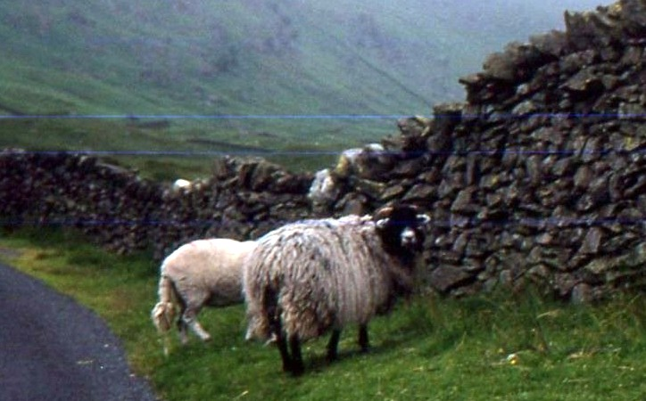

An dañvad penn-gornik
et rapprochement avec "Ma denv guengornik" du Premier carnet de Keransquer
Texte recueilli par François-Marie Luzel:
Publié dans "Sonioù Breizh-Izel", tome I en 1890
Mélodie (Plinn)
An dizertour
Arrangement Christian Souchon (c) 2008
Source: le site de M.Quentel, "Son ha ton" (voir "Liens")
|
VERSION "SONIOU BREIZ IZEL" AN DAVAD PENN-GORNIK 1. Me m oa eun davad penn-gornic ; Caon dam davad penn-gornic, (bis) Pa oa ganin, oan pinvidic ; Caon dam davad penn-gornic, Oh ! ia pinvidic mad ! Caon, Caon dam davad ! 2. Pa gassenn anezhi dar choad, E tagê tri bleiz n eur chrogad, Hac ho mamm, hac ho zad, Oh ! ia fad ! Caon dam davad penn-gornic, etc... 3. Pa gassenn n ezhi dar brugou, E tigasse gouzill dhe chraou, Ia, dec carad, Ha re vad ! 4. Phi goroënn, deuz ar mintin, Am bije tri leiz ar vassin, Ter vassinad, Ha re vad ! 5. Pa hi goroënn, deuz ann noz, Am bije amann, antro-noz, Ia, dec podad, Ha podadou mad ! 6. Euz ar mintin pa staote, Trichouech milin a vâle, Ha choas, mar vije, Ha mâla mad ! 7. Gant ar gloan euz he daou goste, Me a wiske ma bugale, Oh ! ia fad ! Ho gwiske mad ! 8. Gant eun tamm gloan a vec he lost, Me roë eun habit dar provost, Oh ! ia fad ! Eun habit vad ! 9. Gant he lost ha gwalen he geïn, Me raï eur char d charréad meïn, Oh ! ia fad, Hac eur char mad ! Caon dam davad penn-gornic Caon dam davad ! Kanet gant Mari Daniel e Duault |
AN DEÑV GWENN-GORNIK 1. Pa oa bev ma deñv gwenn-gornik, Kañv d'am deñv gwenn-gornik! (bis) Me oa ur paotr pinvidik. Kañv d'am deñv gwenn-gornik! Me am boa moyen vraz! Kañv, kañv d'am deñvad! 2. Gant al lard demeus he c'herniel Me larde triwec'h kilhoroù Hag an heuzoù bras he dad, Ha oa lardet mat. Kañv, kañv d'am deñv gwenn-gornik... 3. P'he gasen d'he park da beuriñ Triwec'h c'harret lann-gouzil ae ganti. Ya, holl-rac'h 'n ur c'hofad! Oh! ya-vad! 4. Hi a zalc'he war daou korn Daou kemener o c'hwriat Hag o dalc'he mat Ya, avat! 5. Ha pa hi goroen deus an noz M'em boa amann deuet an noz, O ya, triwec'h podad! Podadoù mad! 6. Triwec'h grweg evel d'am hini Mar ve ket vit skarzhañ dindanhi Ha pa ve bouchet mat Bouchet mad! 7. Gant ar gloan deus he c'hostez Me a wiske holl dud ar roue Hag ur vantel vras d'e dad! Ya d'e dad! 8. Gant ar gloan demeus penn he lost Me roe un habit d'ar provost Hag un tok bras d'e dad! Un tok bras! Kañv, kañv d'am deñv gwenn-gornik! A oa deñvdez vat! |
TRADUCTION (version "SONIOU") LA BREBIS A TÊTE CORNUE 1. Ma brebis à tête cornue, Que je la regrette! (bis> Quand je lavais, jétais riche, Deuil à ma brebis à tète cornue Oh ! oui, bien riche ! Deuil à ma brebis ! 2. Quand je la menais au bois, Elle étranglait trois loups, dun seul coup, Et leur mère, et leur père, Oh ! oui bien ! Deuil à ma brebis à tète cornue... 3. Quand je la menais aux bruyères, Elle rapportait de la litière à sa crèche, Oui, dix charretées, Et de bonnes! 4. Quand je la trayais,le matin, Javais plein trois fois le bassin, Trois bassinées, Et de bonnes ! 5. Quand je la trayais, le soir, Javais du beurre, à minuit, Oui, dix potées, Et de bonnes potées ! 6. Le matin, quand elle urinait, Dix-huit moulins moulaient, Et davantage, sil y en avait, Et bien moudre ! 7. Avec la laine de ses deux flancs, Jhabillais tous mes enfants, Oh ! oui bien ! Je les habillais bien ! 8. Avec un peu de laine du bout de sa queue, Je donnais un habit au prévôt, Oh ! oui bien ! Un bon habit ! 9. Avec sa queue et lépine de son dos, Je ferai une charrette à charroyer des pierres, Oh ! oui bien, Et une bonne charrette ! Deuil à ma brebis à tête cornue, Deuil à ma brebis ! Chanté par Marie Daniel à Duault. |
English Translation of the Lyrics by Luzel
|
1. I used to have a horned ewe: Woe's me for my horned ewe! (twice) She made me much richer than you; Woe's me for my horned ewe I was a richman, too! Woe is me for my yew! 2. When I would take her to the wood, Throttle three wolfes with one snap she could", With their dad and their mum, Of course, she would! Woe is me for my horned ewe... 3. When I took her to the heather, She would come back with litter for her crib, She would! Ten cartful of litter! And good litter, too! |
4. When I milked her in the morning, I would get three bowlful of milk, Aye, three bowlful, Of good milk, too! 5. When I milked her in the evening, I would get butter at midnight, Aye ten potful, And good butter, too! 6. In the morning when she would pee, Eighteen mills did she drive And more if necessary, And well did they grind! |
7. With the wool off her sides, I could dress all my kids, Well were they dressed! In a good dress, too! 8. With the wool off the tip of her tail, I could make an outfit for the provost, He will be well dressed! In fine clothes, too! 9. With her tail and spine, I'll make a barrow to cart stones, Yes I will And a good barrow, too! Woe is me for my horned ewe, Woe is me for my ewe! Sung by Marie Daniel at Duault. |